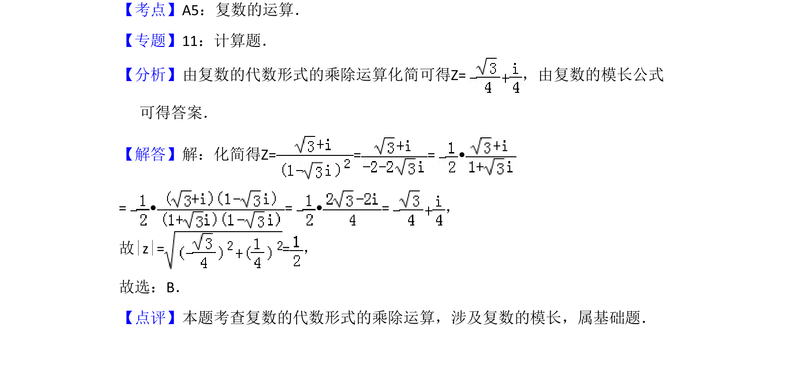

考点：复数运算 复数的模
已知复数代数形式，通过乘除运算化简并求模长。

📄 原 PDF 第 2 页：
素材/真题/吉林/2008-2024·（吉林）数学高考真题/2010年高考数学试卷（文）（新课标）（解析卷）.pdf
3．（5分）已知复数Z=，则|z|=（ ） A．B．C．1 D．2
【考点】A5：复数的运算．菁优网版权所有 【专题】11：计算题． 【分析】由复数的代数形式的乘除运算化简可得Z=，由复数的模长公式 可得答案． 【解答】解：化简得Z= = = • = • = • =， 故|z|= =， 故选：B． 【点评】本题考查复数的代数形式的乘除运算，涉及复数的模长，属基础题．